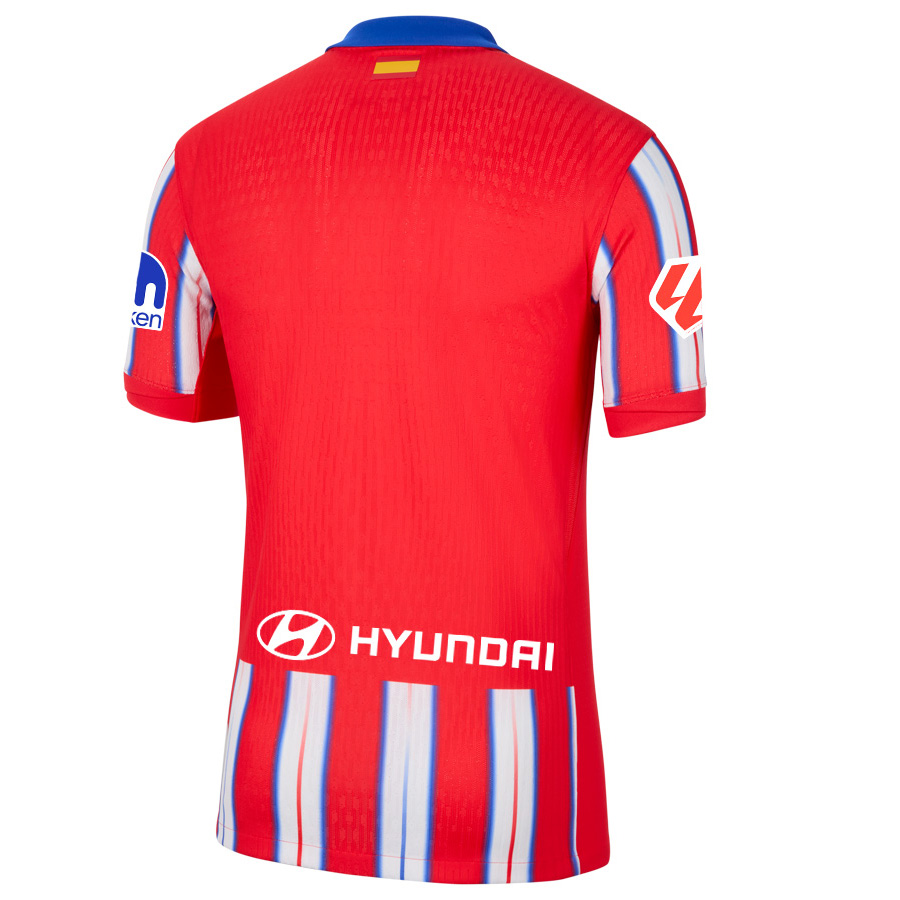

The iconic red and white striped kit of Atletico Madrid was inspired by the colors of Athletic Bilbao, with whom the club shares historical roots. Founded in 1903 by Basque students in Madrid, Atletico originally wore blue and white shirts like Blackburn Rovers. However, in 1911, they adopted the red and white stripes—partly because red and white fabric was easier and cheaper to find in Spain, often used for mattress covers, earning the team the nickname Los Colchoneros (The Mattress Makers). Over the years, the kit has become a symbol of the club’s hardworking and passionate identity. As for the away kits, Atletico Madrid has experimented with various colors over the years, including navy blue, black, yellow, and even teal. These changes often reflect modern design trends or pay tribute to elements of the club’s history. While the home kit remains a constant symbol of tradition, the away kits allow for more creativity and evolution in the club’s visual identity.
Atletico Madrid 2025/2026 Jersey's

Home Kit
Away Kit
Elgible for next season's Competitions

La liga
Copa Del Rey

Supercopa de Espana